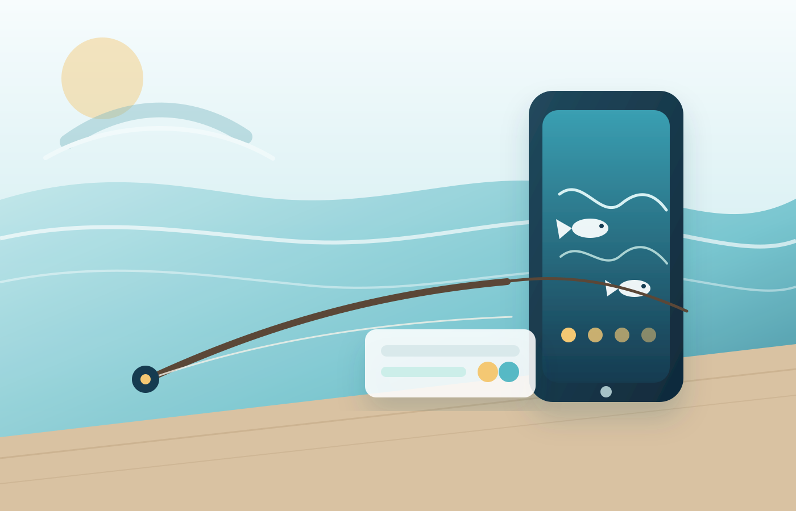

釣りの不安を減らす
ルール、天気、潮、場所選び。釣りに行く前の迷いや確認を、スマートフォンで わかりやすく整理できる体験を作っています。
RIKO Official Site
リコは、海と人をつなぐアプリを作っています。現在は「海の幸ルールブック」と 「魚スイッチ」を中心に、釣りの時間を支えるものづくりに取り組んでいます。

Current Focus
釣りアプリ 2本公開中Current Focus
ルール、天気、潮、場所選び。釣りに行く前の迷いや確認を、スマートフォンで わかりやすく整理できる体験を作っています。
釣りを始めた人にも、長く楽しんでいる人にも使いやすいように。日常の釣行判断を そっと支えるアプリを育てています。
iOS版を公開中です。Android版は審査中で、公開でき次第このサイトでもお知らせします。
Apps
iOS版公開中 / Android版近日公開
海釣りで確認しておきたいルールを、すぐに見つけやすくまとめるためのアプリです。 釣り場に向かう前の確認や、現地での判断をサポートします。
About
釣りとアプリ開発を軸に、海の楽しさや日々の気づきを形にしています。 使う人が迷わず、安心して釣りを楽しめるように、実用性とわかりやすさを大切にしています。
この公式サイトでは、現在取り組んでいるアプリ、SNSでの発信、これからの活動を ひとつの場所にまとめてお知らせしていきます。
Media
釣りの記録、アプリ開発の進捗、日々の活動をそれぞれの場所で発信しています。 個別のSNSリンクは、公開前にここへ整理して追加します。
写真や短い言葉で、釣りの時間や制作の近況を届けます。
アプリの更新情報や、制作中の気づきをリアルタイムにまとめます。
釣りの様子や、アプリの便利な使い方を動画で紹介します。
釣りの楽しさやアプリのポイントを、気軽に見られる形で発信します。
News
Android版「海の幸ルールブック」「魚スイッチ」を審査中です。
iOS版「魚スイッチ」を公開しました。
iOS版「海の幸ルールブック」を公開しました。
Contact
アプリ、SNS、これまでの活動リンクはこちらから確認できます。お問い合わせ先は、 公開前に正式な導線へ差し替えます。